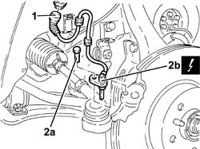

3340A30 rpm sensor (one) of one l/h or r/h front wheel - r+r
- Path
- Procedures > 33 BRAKING SYSTEM > 3340 A(B.S. ANTI-LOCK BRAKING SYSTEM .) > 3340A abs check/adjustment devices > 3340A30 rpm sensor (one) of one l/h or r/h front wheel - r+r
- Kind
- repair procedure (removal / refitting; the operation number is the code)
- Applies to
- all engines; all production periods
- Interactive page
- https://sloeber94.github.io/elrnDB-a156/en/#/3238094
Applies to: all engines; all production periods
 Removing
Removing
 Refitting
RefittingDisconnect the battery negative (-) terminal.
 | Name | Connector |
|---|---|---|
- | Battery |
1. Disconnect the electrical connection for one of the front wheel rpm sensors.
2. Undo the bolt (2a) and remove one of the the front wheel rpm sensors (2b) complete with electrical wiring.
| Name | Connector |
|---|---|---|
2b | .Left .front wheel sensor for ABS |
| Name | Connector |
|---|---|---|
2b | .Right .front wheel sensor for ABS |

Applies to: all engines; all production periods
Refitting
RemovingFit the rpm sensor for one of the front wheels and secure it tightening the bolt to the recommended torque.
 | Fastening | Component | Ø | Value (daNm) |
|---|---|---|---|---|
- | Bolt | ABS SYSTEM FRONT WHEEL RPM SENSOR | M6 | 0.4 ÷ 0.7 |
| Name | Connector |
|---|---|---|
- | .Left .front wheel sensor for ABS |
| Name | Connector |
|---|---|---|
- | .Right .front wheel sensor for ABS |
Connect the electrical connection for one of the front wheel rpm sensors.
Fasten the electrical wiring for one of the front wheel rpm sensors to the supports.
Connect the battery terminal (-).
| Name | Connector |
|---|---|---|
- | Battery |